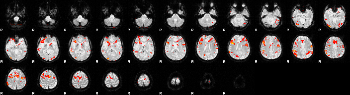

FMRI data processing was carried out using FEAT (FMRI Expert Analysis Tool) Version 6.00, part of FSL 5.0.x (FMRIB's Software Library, www.fmrib.ox.ac.uk/fsl).Z (Gaussianised T/F) statistic images were thresholded at P = 0.001 (uncorrected).
tone counting vs baseline
